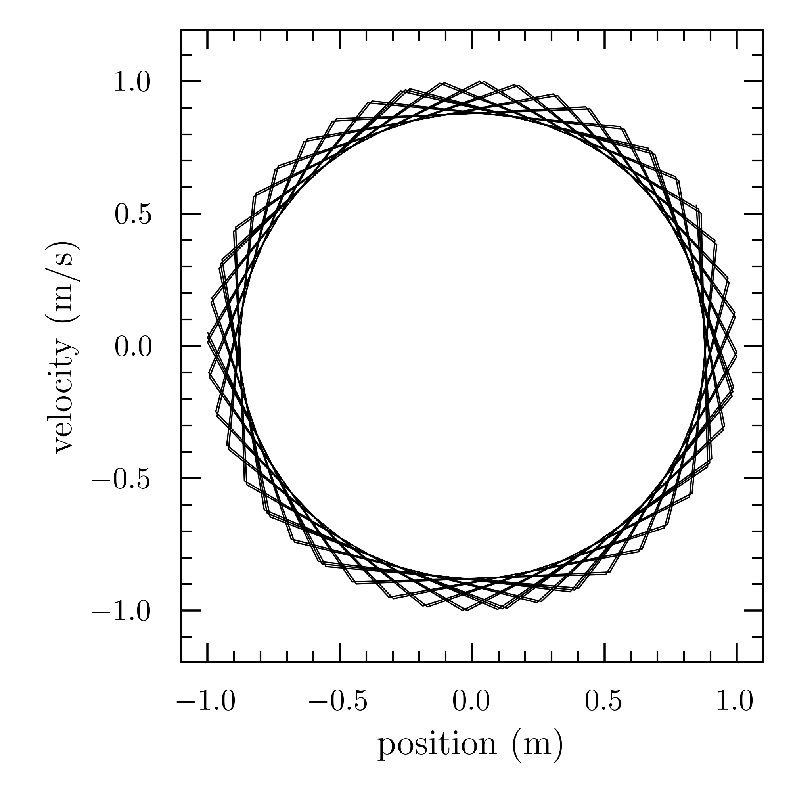

Theory
One of the simplest differential equations describing circular motion is
$r''(t)=-r$.
This may be written as a system of two equations:
$r'=v$
$v'=-r$
Using Euler's method, we can derive formulas expressing x(t + h) and v(t + h) using x(t), v(t), and h, where h is the time step:
$r(t+h) \approx r(t)+r'(t) \times h \approx r(t)+v(t) \times h$
$v(t+h) \approx v(t)+v'(t) \times h \approx v(t)-x(t) \times h$
If at time t = 0, we have x(0) and v(0) = 1, we can let h = 0.01, make 1000 time steps, and plot the plane portrait of the system. With a little intuition, we find the following satisfies the initial conditions:
$r(t)=\sin(t)$
$v(t)=\cos(t)$
We can now re-write the equations:
$r(t+h) \approx r(t)+r'(t) \times h \approx \sin(t)+\cos(t) \times h$
$v(t+h) \approx v(t)+v'(t) \times h \approx \cos(t)-\sin(t) \times h$

Click image to view on GitHub.

Gravitation
We first consider the forces present in our toy model, two-body system. We define our system as having constant mass and no external force present. Newton's law of universal gravitation defines the gravitational force between two spherical objects of mass m1 and m2 separated by distance r as
$\vec{F}=\frac{\gamma \, m_1 m_2}{r^2}\hat{r}$,
where γ is the universal gravitational constant, approximately equal to γ = 6.673 × 10−11 N m2 kg−2. The unit vector r originates from the center-of-mass of m1 towards the center-of-mass of m2, and by definition may be rewritten as r / ||r||. Doing so, our equation for the gravitational force becomes:
$\vec{F}=\frac{\gamma \, m_1 m_2}{r^3}\vec{r}_{12}$
Newton's second law states that a force acting on a point of mass will lead to a change in momentum per unit time:
$\vec{F}_{21}=m_{1}\frac{d^2r_{1}}{dt^2}$
We can set the above two equations equal to get
$m_{1}\frac{d^2r_{1}}{dt^2}=\frac{\gamma m_1 m_2}{r^3}\vec{r}_{12}$
which may be reduced to a pair of coupled first-order ordinary differential equations:
$m_1\frac{dv}{dt}=\frac{\gamma m_1 m_2}{r^3}\vec{r}_{12}$
$\frac{dr}{dt}=\vec{v}$
Dividing both sides of the above by $m_{1}$, we receive the following expression for the acceleration of object 1:
$\frac{d^2r_{1}}{dt^2} = \frac{\gamma m_2}{r^3}\vec{r}_{12}$
Additionally, we can write the acceleration of object 2 as:
$\frac{d^2r_{2}}{dt^2} = \frac{\gamma m_1}{r^3}\vec{r}_{21}$
We then translate Equations 7 and 8 into the functions accel_obj1() and accel_obj2, respectively:
def accel_obj1(r1, r2):
r = r2 - r1
norm_r = np.linalg.norm(r)
accel1 = G * m2 * r / norm_r**3
return accel1
def accel_obj2(r1, r2):
r = r1 - r2
norm_r = np.linalg.norm(r)
accel2 = G * m1 * r / norm_r**3
return accel2
Energy
The total energy of a two-body system equals the sum of object 1's kinetic energy $(T_{1})$, object 2's kinetic energy $(T_{2})$, and the potential energy $(U)$ of the system:
$E_{\text{tot}} = T_{1} +T_{2} + U$
Both kinetic and potential energy may be represented as a function of time:
$T(t)=\frac{1}{2}\sum_{k=1}^N m_{k}v_{k}(t)^2$
$U(t)=-\gamma \sum_{k < n} \frac{m_{k}m_{n}}{|r_{k}(t)-r_{n}(t)|}$
We create the function energy() for a more explicit view of how each numerical method influences the behavior of a system's total energy over time:
def energy(v1,v2,r1,r2):
for t in range(0, t_range):
T1[t] = 0.5 * m1 * np.linalg.norm(v1[t])**2
T2[t] = 0.5 * m2 * np.linalg.norm(v2[t])**2
U[t] = G * m1 * m2 / np.linalg.norm(r1[t] - r2[t])
Etot[t] = T1[t] + T2[t] - U[t]
Numerical Methods
The Euler Method
Given an initial condition, Euler's method may be used to obtain a numerical solution to first-order differential equations. The method states that the value of a differentiable function at $t+\delta{t}$ may be approximated as $f(t+\delta{t}) \approx f(t)+f'(t)\times\delta{t}$, where $\delta{t}$ is called the ``time step.'' Note: Euler's Method is simply the first two terms of a Taylor Series.
$f(t+\delta{t}) \approx f(t)+f'(t)\times\delta{t}+\frac{f''(t)\times \delta{t}^2}{2!}+\frac{f'''(t)\times\delta{t}^3}{3!}+\ldots$
We derive formulas for the position $r_{k}(t+\delta{t})$ and momentum $m_{k}v_{k}(t+\delta{t})$ at each time step as follows:
$r_{k}(t+\delta{t}) \approx r_{k}(t)+v_{k}(t)\times\delta{t}$
$m_{k}v_{k}(t+\delta{t}) \approx m_{k}v_{k}(t)+F_{k}(t)\times\delta{t}$
For the purpose of our code, we rewrite $\textnormal{Eq.}\,(11)$ as:
$v_{k}(t+\delta{t}) \approx v_{k}(t)+\frac{F_{k}(t)}{m_{k}}\times\delta{t} \approx v_{k}(t)+a_{k}(t)\times\delta{t}$
These functions are directly used in our code. $\textnormal{Eqs.}\,(14)$ and $(12)$ are translated to Python as v_obj1[t+1] and r_obj1[t+1], respectively.
Since the Euler method is highly susceptible to error, computations should utilize small time steps over a large number of iterations for the highest accuracy. To illustrate, we gradually decrease the time step and increase the number of iterations in our algorithm. We begin with t = 1000 and dt = 0.01; the two bodies are initially attracted to each other, only to both be rapidly ejected from the system.
Even decreasing the time step by $10\%$ for a step size value of $dt=0.001$ gives us a much different picture:
When we decrease the time step by $100\%$ and increase the number of iterations by $500\%$, it becomes clear that energy is not being conserved.
The orbits may be "tightened" by continuing to increase the number of iterations and decrease the size of each time step. At this point, any further fine-tuning may result in a non-trivial rise in processing time. It becomes clear that this method is computationally expensive and impractical for use in modeling.
The Euler-Cromer Method
The Euler-Cromer (or predictor-corrector) method mitigates the spiraling seen in the previous section with a small change. The \lstinline{for}-loop used in the Euler method is altered so that
r_obj1[t+1] = r_obj1[t] + h * v_obj1[t]
becomes
r_obj1[t+1] = r_obj1[t] + h * v_obj1[t+1]
and
r_obj2[t+1] = r_obj2[t] + h * v_obj2[t]
becomes
r_obj2[t+1] = r_obj2[t] + h * v_obj2[t+1]
While this change may seem trivial, the result is a markedly more efficient program with higher accuracy.